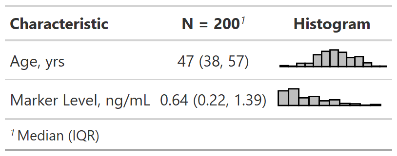

Reproducible Reporting with R + gtsummary
Daniel D. Sjoberg
Introduction
Acknowledgements
This work is licensed under a Creative Commons Attribution-ShareAlike 4.0 International License (CC BY-SA4.0).
Daniel D. Sjoberg

Questions
- Please feel free to ask questions at any time

Motivation
Reproducibility Crisis
Quality of medical research is often low
Low quality code in medical research part of the problem
Low quality code is more likely to contain errors
Reproducibility is often cumbersome and time-consuming

{gtsummary} overview
- Create tabular summaries with sensible defaults but highly customizable
- Types of summaries:
- “Table 1”-types
- Cross-tabulation
- Regression models
- Survival data
- Survey data
- Custom tables
- Report statistics from {gtsummary} tables inline in R Markdown
- Stack and/or merge any table type
- Use themes to standardize across tables
- Choose from different print engines
Example Dataset
The
trialdata set is included with {gtsummary}Simulated data set of baseline characteristics for 200 patients who receive Drug A or Drug B
Variables were assigned labels using the
labelledpackage
Example Dataset
tbl_summary()
Basic tbl_summary()
Four types of summaries:
continuous,continuous2,categorical, anddichotomousStatistics are
median (IQR)for continuous,n (%)for categorical/dichotomousVariables coded
0/1,TRUE/FALSE,Yes/Notreated as dichotomousLists
NAvalues under “Unknown”Label attributes are printed automatically
Customize tbl_summary() output
| Characteristic | Drug A, N = 981 | Drug B, N = 1021 |
|---|---|---|
| Age | 46 (37, 59) | 48 (39, 56) |
| Unknown | 7 | 4 |
| Grade | ||
| I | 35 (36%) | 33 (32%) |
| II | 32 (33%) | 36 (35%) |
| III | 31 (32%) | 33 (32%) |
| Tumor Response | 28 (29%) | 33 (34%) |
| Unknown | 3 | 4 |
| 1 Median (IQR); n (%) | ||
by: specify a column variable for cross-tabulation
Customize tbl_summary() output
| Characteristic | Drug A, N = 981 | Drug B, N = 1021 |
|---|---|---|
| Age | ||
| Median (IQR) | 46 (37, 59) | 48 (39, 56) |
| Unknown | 7 | 4 |
| Grade | ||
| I | 35 (36%) | 33 (32%) |
| II | 32 (33%) | 36 (35%) |
| III | 31 (32%) | 33 (32%) |
| Tumor Response | 28 (29%) | 33 (34%) |
| Unknown | 3 | 4 |
| 1 n (%) | ||
by: specify a column variable for cross-tabulationtype: specify the summary type
Customize tbl_summary() output
| Characteristic | Drug A, N = 981 | Drug B, N = 1021 |
|---|---|---|
| Age | ||
| Mean (SD) | 47 (15) | 47 (14) |
| Range | 6, 78 | 9, 83 |
| Unknown | 7 | 4 |
| Grade | ||
| I | 35 (36%) | 33 (32%) |
| II | 32 (33%) | 36 (35%) |
| III | 31 (32%) | 33 (32%) |
| Tumor Response | 28 / 95 (29%) | 33 / 98 (34%) |
| Unknown | 3 | 4 |
| 1 n (%); n / N (%) | ||
by: specify a column variable for cross-tabulationtype: specify the summary typestatistic: customize the reported statistics
Customize tbl_summary() output
| Characteristic | Drug A, N = 981 | Drug B, N = 1021 |
|---|---|---|
| Age | ||
| Mean (SD) | 47 (15) | 47 (14) |
| Range | 6, 78 | 9, 83 |
| Unknown | 7 | 4 |
| Pathologic tumor grade | ||
| I | 35 (36%) | 33 (32%) |
| II | 32 (33%) | 36 (35%) |
| III | 31 (32%) | 33 (32%) |
| Tumor Response | 28 / 95 (29%) | 33 / 98 (34%) |
| Unknown | 3 | 4 |
| 1 n (%); n / N (%) | ||
by: specify a column variable for cross-tabulationtype: specify the summary typestatistic: customize the reported statistics
label: change or customize variable labels
Customize tbl_summary() output
| Characteristic | Drug A, N = 981 | Drug B, N = 1021 |
|---|---|---|
| Age | ||
| Mean (SD) | 47.0 (14.7) | 47.4 (14.0) |
| Range | 6.0, 78.0 | 9.0, 83.0 |
| Unknown | 7 | 4 |
| Pathologic tumor grade | ||
| I | 35 (36%) | 33 (32%) |
| II | 32 (33%) | 36 (35%) |
| III | 31 (32%) | 33 (32%) |
| Tumor Response | 28 / 95 (29%) | 33 / 98 (34%) |
| Unknown | 3 | 4 |
| 1 n (%); n / N (%) | ||
by: specify a column variable for cross-tabulationtype: specify the summary typestatistic: customize the reported statistics
label: change or customize variable labelsdigits: specify the number of decimal places for rounding
{gtsummary} + formulas

Named list are OK too! label = list(age = "Patient Age")
Add-on functions in {gtsummary}
tbl_summary() objects can also be updated using related functions.
add_*()add additional column of statistics or information, e.g. p-values, q-values, overall statistics, treatment differences, N obs., and moremodify_*()modify table headers, spanning headers, footnotes, and morebold_*()/italicize_*()style labels, variable levels, significant p-values
Update tbl_summary() with add_*()
| Characteristic | Drug A, N = 981 | Drug B, N = 1021 | p-value2 | q-value3 |
|---|---|---|---|---|
| Age | 46 (37, 59) | 48 (39, 56) | 0.7 | 0.9 |
| Unknown | 7 | 4 | ||
| Grade | 0.9 | 0.9 | ||
| I | 35 (36%) | 33 (32%) | ||
| II | 32 (33%) | 36 (35%) | ||
| III | 31 (32%) | 33 (32%) | ||
| Tumor Response | 28 (29%) | 33 (34%) | 0.5 | 0.9 |
| Unknown | 3 | 4 | ||
| 1 Median (IQR); n (%) | ||||
| 2 Wilcoxon rank sum test; Pearson’s Chi-squared test | ||||
| 3 False discovery rate correction for multiple testing | ||||
add_p(): adds a column of p-valuesadd_q(): adds a column of p-values adjusted for multiple comparisons through a call top.adjust()
Update tbl_summary() with add_*()
| Characteristic | Overall, N = 2001 | Drug A, N = 981 | Drug B, N = 1021 |
|---|---|---|---|
| Age | 47 (38, 57) | 46 (37, 59) | 48 (39, 56) |
| Grade | |||
| I | 68 (34%) | 35 (36%) | 33 (32%) |
| II | 68 (34%) | 32 (33%) | 36 (35%) |
| III | 64 (32%) | 31 (32%) | 33 (32%) |
| Tumor Response | 61 (32%) | 28 (29%) | 33 (34%) |
| 1 Median (IQR); n (%) | |||
add_overall(): adds a column of overall statistics
Update tbl_summary() with add_*()
| Characteristic | N | Overall, N = 2001 | Drug A, N = 981 | Drug B, N = 1021 |
|---|---|---|---|---|
| Age | 189 | 47 (38, 57) | 46 (37, 59) | 48 (39, 56) |
| Grade | 200 | |||
| I | 68 (34%) | 35 (36%) | 33 (32%) | |
| II | 68 (34%) | 32 (33%) | 36 (35%) | |
| III | 64 (32%) | 31 (32%) | 33 (32%) | |
| Tumor Response | 193 | 61 (32%) | 28 (29%) | 33 (34%) |
| 1 Median (IQR); n (%) | ||||
add_overall(): adds a column of overall statisticsadd_n(): adds a column with the sample size
Update tbl_summary() with add_*()
| Characteristic | N | Overall, N = 200 | Drug A, N = 98 | Drug B, N = 102 |
|---|---|---|---|---|
| Age, Median (IQR) | 189 | 47 (38, 57) | 46 (37, 59) | 48 (39, 56) |
| Grade, No. (%) | 200 | |||
| I | 68 (34%) | 35 (36%) | 33 (32%) | |
| II | 68 (34%) | 32 (33%) | 36 (35%) | |
| III | 64 (32%) | 31 (32%) | 33 (32%) | |
| Tumor Response, No. (%) | 193 | 61 (32%) | 28 (29%) | 33 (34%) |
add_overall(): adds a column of overall statisticsadd_n(): adds a column with the sample sizeadd_stat_label(): adds a description of the reported statistic
Update with bold_*()/italicize_*()
| Characteristic | Drug A, N = 981 | Drug B, N = 1021 | p-value2 |
|---|---|---|---|
| Age | 46 (37, 59) | 48 (39, 56) | 0.7 |
| Unknown | 7 | 4 | |
| Grade | 0.9 | ||
| I | 35 (36%) | 33 (32%) | |
| II | 32 (33%) | 36 (35%) | |
| III | 31 (32%) | 33 (32%) | |
| Tumor Response | 28 (29%) | 33 (34%) | 0.5 |
| Unknown | 3 | 4 | |
| 1 Median (IQR); n (%) | |||
| 2 Wilcoxon rank sum test; Pearson’s Chi-squared test | |||
bold_labels(): bold the variable labelsitalicize_levels(): italicize the variable levelsbold_p(): bold p-values according a specified threshold
Update tbl_summary() with modify_*()
| Characteristic | Drug | |
|---|---|---|
| Group A1 | Group B1 | |
| Age | 46 (37, 59) | 48 (39, 56) |
| Grade | ||
| I | 35 (36%) | 33 (32%) |
| II | 32 (33%) | 36 (35%) |
| III | 31 (32%) | 33 (32%) |
| Tumor Response | 28 (29%) | 33 (34%) |
| 1 median (IQR) for continuous; n (%) for categorical | ||
- Use
show_header_names()to see the internal header names available for use inmodify_header()
Column names
all_stat_cols() selects columns "stat_1" and "stat_2"
Update tbl_summary() with add_*()
trial |>
select(trt, marker, response) |>
tbl_summary(
by = trt,
statistic = list(marker ~ "{mean} ({sd})",
response ~ "{p}%"),
missing = "no"
) |>
add_difference()| Characteristic | Drug A, N = 981 | Drug B, N = 1021 | Difference2 | 95% CI2,3 | p-value2 |
|---|---|---|---|---|---|
| Marker Level (ng/mL) | 1.02 (0.89) | 0.82 (0.83) | 0.20 | -0.05, 0.44 | 0.12 |
| Tumor Response | 29% | 34% | -4.2% | -18%, 9.9% | 0.6 |
| 1 Mean (SD); % | |||||
| 2 Welch Two Sample t-test; Two sample test for equality of proportions | |||||
| 3 CI = Confidence Interval | |||||
add_difference(): mean and rate differences between two groups. Can also be adjusted differences
Update tbl_summary() with add_*()
Add-on functions in {gtsummary}
And many more!
See the documentation at http://www.danieldsjoberg.com/gtsummary/reference/index.html
And a detailed tbl_summary() vignette at http://www.danieldsjoberg.com/gtsummary/articles/tbl_summary.html
Cross-tabulation with tbl_cross()
tbl_cross() is a wrapper for tbl_summary() for n x m tables
Continuous Summaries with tbl_continuous()
tbl_continuous() summarizes a continuous variable by 1, 2, or more categorical variables
Survey data with tbl_svysummary()
| Characteristic | Survived | p-value2 | |
|---|---|---|---|
| No, N = 1,4901 | Yes, N = 7111 | ||
| Class | 0.7 | ||
| 1st | 122 (8.2%) | 203 (29%) | |
| 2nd | 167 (11%) | 118 (17%) | |
| 3rd | 528 (35%) | 178 (25%) | |
| Crew | 673 (45%) | 212 (30%) | |
| Sex | 0.048 | ||
| Male | 1,364 (92%) | 367 (52%) | |
| Female | 126 (8.5%) | 344 (48%) | |
| 1 n (%) | |||
| 2 chi-squared test with Rao & Scott’s second-order correction | |||
Survival outcomes with tbl_survfit()
library(survival)
fit <- survfit(Surv(ttdeath, death) ~ trt, trial)
tbl_survfit(
fit,
times = c(12, 24),
label_header = "**{time} Month**"
) |>
add_p()| Characteristic | 12 Month | 24 Month | p-value1 |
|---|---|---|---|
| Chemotherapy Treatment | 0.2 | ||
| Drug A | 91% (85%, 97%) | 47% (38%, 58%) | |
| Drug B | 86% (80%, 93%) | 41% (33%, 52%) | |
| 1 Log-rank test | |||
tbl_regression()
Traditional model summary()
Looks messy and it’s not easy to digest
Basic tbl_regression()
| Characteristic | log(OR)1 | 95% CI1 | p-value |
|---|---|---|---|
| Age | 0.02 | 0.00, 0.04 | 0.091 |
| T Stage | |||
| T1 | — | — | |
| T2 | -0.54 | -1.4, 0.31 | 0.2 |
| T3 | -0.06 | -0.95, 0.82 | 0.9 |
| T4 | -0.23 | -1.1, 0.64 | 0.6 |
| 1 OR = Odds Ratio, CI = Confidence Interval | |||
Displays p-values for covariates
Shows reference levels for categorical variables
Model type recognized as logistic regression with odds ratio appearing in header
Customize tbl_regression() output
| Characteristic | OR1 | 95% CI1 | p-value |
|---|---|---|---|
| Age | 1.02 | 1.00, 1.04 | 0.087 |
| T Stage | 0.6 | ||
| T1 | — | — | |
| T2 | 0.58 | 0.24, 1.37 | |
| T3 | 0.94 | 0.39, 2.28 | |
| T4 | 0.79 | 0.33, 1.90 | |
| No. Obs. | 183 | ||
| Log-likelihood | -112 | ||
| AIC | 234 | ||
| BIC | 250 | ||
| 1 OR = Odds Ratio, CI = Confidence Interval | |||
Display odds ratio estimates and confidence intervals
Add global p-values
Add various model statistics
Supported models in tbl_regression()
biglm::bigglm()biglmm::bigglm()brms::brm()cmprsk::crr()fixest::feglm()fixest::femlm()fixest::feNmlm()fixest::feols()gam::gam()geepack::geeglm()glmmTMB::glmmTMB()lavaan::lavaan()
lfe::felm()lme4::glmer()lme4::glmer.nb()lme4::lmer()MASS::glm.nb()MASS::polr()mgcv::gam()mice::mirannet::multinom()ordinal::clm()ordinal::clmm()parsnip::model_fit
plm::plm()rstanarm::stan_glm()stats::aov()stats::glm()stats::lm()stats::nls()survey::svycoxph()survey::svyglm()survey::svyolr()survival::clogit()survival::coxph()survival::survreg()tidycmprsk::crr()VGAM::vglm()
Custom tidiers can be written and passed to tbl_regression() using the tidy_fun= argument.
Univariate models with tbl_uvregression()
| Characteristic | N | OR1 | 95% CI1 | p-value |
|---|---|---|---|---|
| Chemotherapy Treatment | 193 | |||
| Drug A | — | — | ||
| Drug B | 1.21 | 0.66, 2.24 | 0.5 | |
| Age | 183 | 1.02 | 1.00, 1.04 | 0.10 |
| Grade | 193 | |||
| I | — | — | ||
| II | 0.95 | 0.45, 2.00 | 0.9 | |
| III | 1.10 | 0.52, 2.29 | 0.8 | |
| 1 OR = Odds Ratio, CI = Confidence Interval | ||||
Specify model
method,method.args, and theresponsevariableArguments and helper functions like
exponentiate,bold_*(),add_global_p()can also be used withtbl_uvregression()
Break

inline_text()
{gtsummary} reporting with inline_text()
Tables are important, but we often need to report results in-line.
Any statistic reported in a {gtsummary} table can be extracted and reported in-line in an R Markdown document with the
inline_text()function.The pattern of what is reported can be modified with the
pattern=argument.Default is
pattern = "{estimate} ({conf.level*100}% CI {conf.low}, {conf.high}; {p.value})"for regression summaries.
{gtsummary} reporting with inline_text()
| Characteristic | N | OR1 | 95% CI1 | p-value |
|---|---|---|---|---|
| Chemotherapy Treatment | 193 | |||
| Drug A | — | — | ||
| Drug B | 1.21 | 0.66, 2.24 | 0.5 | |
| Age | 183 | 1.02 | 1.00, 1.04 | 0.10 |
| Grade | 193 | |||
| I | — | — | ||
| II | 0.95 | 0.45, 2.00 | 0.9 | |
| III | 1.10 | 0.52, 2.29 | 0.8 | |
| 1 OR = Odds Ratio, CI = Confidence Interval | ||||
In Code: The odds ratio for age is `r inline_text(tbl_uvreg, variable = age)`
In Report: The odds ratio for age is 1.02 (95% CI 1.00, 1.04; p=0.10)
{gtsummary} reporting with inline_text()
| Characteristic | Drug A, N = 981 | Drug B, N = 1021 | Difference2 | 95% CI2,3 | p-value2 |
|---|---|---|---|---|---|
| Marker Level (ng/mL) | 0.84 (0.24, 1.57) | 0.52 (0.19, 1.20) | 0.20 | -0.05, 0.44 | 0.12 |
| 1 Median (IQR) | |||||
| 2 Welch Two Sample t-test | |||||
| 3 CI = Confidence Interval | |||||
In Code:
- The median (IQR) marker among participants randomized to Drug A was
`r inline_text(gts_small_summary, variable = marker, column = 'Drug A')`. - The median (IQR) age among participants randomized to Drug A was
`r inline_text(gts_small_summary, variable = marker, column = 'Drug A', pattern = '{median}')`. - The difference in marker level was
`r inline_text(gts_small_summary, variable = marker, pattern = '{estimate} (95% {ci})')`.
In Report:
- The median (IQR) marker among participants randomized to Drug A was 0.84 (0.24, 1.57).
- The median (IQR) age among participants randomized to Drug A was 0.84.
- The difference in marker level was 0.20 (95% -0.05, 0.44).
tbl_merge()/tbl_stack()
tbl_merge() for side-by-side tables
A univariable table:
tbl_uvsurv <-
trial |>
select(age, grade, death, ttdeath) |>
tbl_uvregression(
method = coxph,
y = Surv(ttdeath, death),
exponentiate = TRUE
) |>
add_global_p()
tbl_uvsurv| Characteristic | N | HR1 | 95% CI1 | p-value |
|---|---|---|---|---|
| Age | 189 | 1.01 | 0.99, 1.02 | 0.3 |
| Grade | 200 | 0.075 | ||
| I | — | — | ||
| II | 1.28 | 0.80, 2.05 | ||
| III | 1.69 | 1.07, 2.66 | ||
| 1 HR = Hazard Ratio, CI = Confidence Interval | ||||
A multivariable table:
tbl_mvsurv <-
coxph(
Surv(ttdeath, death) ~ age + grade,
data = trial
) |>
tbl_regression(
exponentiate = TRUE
) |>
add_global_p()
tbl_mvsurv| Characteristic | HR1 | 95% CI1 | p-value |
|---|---|---|---|
| Age | 1.01 | 0.99, 1.02 | 0.3 |
| Grade | 0.041 | ||
| I | — | — | |
| II | 1.20 | 0.73, 1.97 | |
| III | 1.80 | 1.13, 2.87 | |
| 1 HR = Hazard Ratio, CI = Confidence Interval | |||
tbl_merge() for side-by-side tables
| Characteristic | Univariable | Multivariable | |||||
|---|---|---|---|---|---|---|---|
| N | HR1 | 95% CI1 | p-value | HR1 | 95% CI1 | p-value | |
| Age | 189 | 1.01 | 0.99, 1.02 | 0.3 | 1.01 | 0.99, 1.02 | 0.3 |
| Grade | 200 | 0.075 | 0.041 | ||||
| I | — | — | — | — | |||
| II | 1.28 | 0.80, 2.05 | 1.20 | 0.73, 1.97 | |||
| III | 1.69 | 1.07, 2.66 | 1.80 | 1.13, 2.87 | |||
| 1 HR = Hazard Ratio, CI = Confidence Interval | |||||||
tbl_stack() to combine vertically
A univariable table:
A multivariable table:
tbl_mvsurv2 <-
coxph(Surv(ttdeath, death) ~
trt + grade + stage + marker,
data = trial) |>
tbl_regression(
show_single_row = trt,
label = trt ~ "Drug B vs A",
exponentiate = TRUE,
include = "trt"
)
tbl_mvsurv2| Characteristic | HR1 | 95% CI1 | p-value |
|---|---|---|---|
| Drug B vs A | 1.30 | 0.88, 1.92 | 0.2 |
| 1 HR = Hazard Ratio, CI = Confidence Interval | |||
tbl_stack() to combine vertically
tbl_strata() for stratified tables
sm_trial |>
mutate(grade = paste("Grade", grade)) |>
tbl_strata(
strata = grade,
~tbl_summary(.x, by = trt, missing = "no") |>
modify_header(all_stat_cols() ~ "**{level}**")
)| Characteristic | Grade I | Grade II | Grade III | |||
|---|---|---|---|---|---|---|
| Drug A1 | Drug B1 | Drug A1 | Drug B1 | Drug A1 | Drug B1 | |
| Age | 46 (36, 60) | 48 (42, 55) | 44 (31, 54) | 50 (43, 57) | 52 (42, 60) | 45 (36, 52) |
| Tumor Response | 8 (23%) | 13 (41%) | 7 (23%) | 12 (36%) | 13 (43%) | 8 (24%) |
| 1 Median (IQR); n (%) | ||||||
Define custom function tbl_cmh()

Define custom function tbl_cmh()

{gtreg} for regulatory submissions
The {gtreg} package uses {gtsummary} to construct tables for regulatory agencies.

{gtreg} for regulatory submissions
| Adverse Event | Drug A, N = 44 | Drug B, N = 56 | ||||||||
|---|---|---|---|---|---|---|---|---|---|---|
| Grade 1 | Grade 2 | Grade 3 | Grade 4 | Grade 5 | Grade 1 | Grade 2 | Grade 3 | Grade 4 | Grade 5 | |
| Blood and lymphatic system disorders | — | 1 (2.3) | — | 1 (2.3) | 1 (2.3) | — | — | — | 1 (1.8) | 6 (11) |
| Anaemia | — | — | 1 (2.3) | 1 (2.3) | — | — | — | 1 (1.8) | 1 (1.8) | 3 (5.4) |
| Increased tendency to bruise | — | — | — | 1 (2.3) | — | — | — | — | 3 (5.4) | 2 (3.6) |
| Iron deficiency anaemia | — | — | — | 1 (2.3) | 1 (2.3) | 1 (1.8) | 2 (3.6) | — | 1 (1.8) | 1 (1.8) |
| Thrombocytopenia | — | 1 (2.3) | — | 1 (2.3) | — | — | — | 3 (5.4) | — | 4 (7.1) |
| Gastrointestinal disorders | — | — | — | 2 (4.5) | 1 (2.3) | — | — | — | 2 (3.6) | 5 (8.9) |
| Difficult digestion | — | — | — | 3 (6.8) | — | 1 (1.8) | — | — | — | 1 (1.8) |
| Intestinal dilatation | 1 (2.3) | — | — | — | — | 1 (1.8) | 1 (1.8) | — | — | 1 (1.8) |
| Myochosis | — | 2 (4.5) | 1 (2.3) | — | — | — | 1 (1.8) | — | 1 (1.8) | 3 (5.4) |
| Non-erosive reflux disease | 3 (6.8) | — | — | — | — | 1 (1.8) | — | — | 3 (5.4) | 3 (5.4) |
| Pancreatic enzyme abnormality | — | — | 1 (2.3) | 1 (2.3) | 1 (2.3) | 2 (3.6) | 1 (1.8) | 1 (1.8) | 1 (1.8) | — |
{gtsummary} themes
{gtsummary} theme basics
A theme is a set of customization preferences that can be easily set and reused.
Themes control default settings for existing functions
Themes control more fine-grained customization not available via arguments or helper functions
Easily use one of the available themes, or create your own
{gtsummary} default theme
| Characteristic | OR1 | 95% CI1 | p-value |
|---|---|---|---|
| Age | 1.02 | 1.00, 1.04 | 0.091 |
| T Stage | |||
| T1 | — | — | |
| T2 | 0.58 | 0.24, 1.37 | 0.2 |
| T3 | 0.94 | 0.39, 2.28 | 0.9 |
| T4 | 0.79 | 0.33, 1.90 | 0.6 |
| 1 OR = Odds Ratio, CI = Confidence Interval | |||
{gtsummary} theme_gtsummary_journal()
| Characteristic | OR (95% CI)1 | p-value |
|---|---|---|
| Age | 1.02 (1.00 to 1.04) | 0.091 |
| T Stage | ||
| T1 | — | |
| T2 | 0.58 (0.24 to 1.37) | 0.22 |
| T3 | 0.94 (0.39 to 2.28) | 0.89 |
| T4 | 0.79 (0.33 to 1.90) | 0.61 |
| 1 OR = Odds Ratio, CI = Confidence Interval | ||
Contributions welcome!
{gtsummary} theme_gtsummary_language()
| 特色 | OR1 | 95% CI1 | P 值 |
|---|---|---|---|
| Age | 1.02 | 1.00, 1.04 | 0.091 |
| T Stage | |||
| T1 | — | — | |
| T2 | 0.58 | 0.24, 1.37 | 0.2 |
| T3 | 0.94 | 0.39, 2.28 | 0.9 |
| T4 | 0.79 | 0.33, 1.90 | 0.6 |
| 1 OR=勝算比, CI=信賴區間 | |||
Language options:
- German
- English
- Spanish
- French
- Gujarati
- Hindi
- Icelandic
- Japanese
- Korean
- Marathi
- Dutch
- Norwegian
- Portuguese
- Swedish
- Chinese Simplified
- Chinese Traditional
{gtsummary} theme_gtsummary_compact()
reset_gtsummary_theme()
theme_gtsummary_compact()
tbl_regression(m1, exponentiate = TRUE) |>
modify_caption("Compact Theme")| Characteristic | OR1 | 95% CI1 | p-value |
|---|---|---|---|
| Age | 1.02 | 1.00, 1.04 | 0.091 |
| T Stage | |||
| T1 | — | — | |
| T2 | 0.58 | 0.24, 1.37 | 0.2 |
| T3 | 0.94 | 0.39, 2.28 | 0.9 |
| T4 | 0.79 | 0.33, 1.90 | 0.6 |
| 1 OR = Odds Ratio, CI = Confidence Interval | |||
Reduces padding and font size
{gtsummary} set_gtsummary_theme()
set_gtsummary_theme()to use a custom theme.See the {gtsummary} + themes vignette for examples
http://www.danieldsjoberg.com/gtsummary/articles/themes.html
{gtsummary} print engines
{gtsummary} print engines
{gtsummary} print engines
Use any print engine to customize table
In Closing
{gtsummary} website
{gtsummary} installation
{gtsummary} sandbox in {bstfun}
http://www.danieldsjoberg.com/bstfun/

 
Package Authors/Contributors
Daniel D. Sjoberg
Michael Curry
Joseph Larmarange
Jessica Lavery
Karissa Whiting
Emily C. Zabor
Xing Bai
Esther Drill
Jessica Flynn
Margie Hannum
Stephanie Lobaugh
Shannon Pileggi
Amy Tin
Gustavo Zapata Wainberg
Other Contributors
@ablack3, @ABorakati, @aghaynes, @ahinton-mmc, @aito123, @akarsteve, @akefley, @albertostefanelli, @alexis-catherine, @amygimma, @anaavu, @andrader, @angelgar, @arbet003, @arnmayer, @aspina7, @asshah4, @awcm0n, @barthelmes, @bcjaeger, @BeauMeche, @benediktclaus, @berg-michael, @bhattmaulik, @BioYork, @brachem-christian, @bwiernik, @bx259, @calebasaraba, @CarolineXGao, @ChongTienGoh, @Chris-M-P, @chrisleitzinger, @cjprobst, @clmawhorter, @CodieMonster, @coeus-analytics, @coreysparks, @ctlamb, @davidgohel, @davidkane9, @dax44, @dchiu911, @ddsjoberg, @DeFilippis, @denis-or, @dereksonderegger, @dieuv0, @discoleo, @djbirke, @dmenne, @ElfatihHasabo, @emilyvertosick, @ercbk, @erikvona, @eweisbrod, @feizhadj, @fh-jsnider, @ge-generation, @ghost, @gjones1219, @gorkang, @GuiMarthe, @hass91, @HichemLa, @hughjonesd, @iaingallagher, @ilyamusabirov, @IndrajeetPatil, @IsadoraBM, @j-tamad, @jalavery, @jeanmanguy, @jemus42, @jenifav, @jennybc, @JeremyPasco, @JesseRop, @jflynn264, @jjallaire, @jmbarajas, @jmbarbone, @JoanneF1229, @joelgautschi, @jojosgithub, @JonGretar, @jordan49er, @jthomasmock, @juseer, @jwilliman, @karissawhiting, @kendonB, @kmdono02, @kwakuduahc1, @lamhine, @larmarange, @leejasme, @loukesio, @lspeetluk, @ltin1214, @lucavd, @LuiNov, @maia-sh, @Marsus1972, @matthieu-faron, @mbac, @mdidish, @MelissaAssel, @michaelcurry1123, @mljaniczek, @moleps, @motocci, @msberends, @mvuorre, @myensr, @MyKo101, @oranwutang, @palantre, @Pascal-Schmidt, @pedersebastian, @perlatex, @philsf, @polc1410, @postgres-newbie, @proshano, @raphidoc, @RaviBot, @rich-iannone, @RiversPharmD, @rmgpanw, @roman2023, @ryzhu75, @sachijay, @saifelayan, @sammo3182, @sandhyapc, @sbalci, @sda030, @shannonpileggi, @shengchaohou, @ShixiangWang, @simonpcouch, @slb2240, @slobaugh, @spiralparagon, @StaffanBetner, @Stephonomon, @storopoli, @szimmer, @tamytsujimoto, @TarJae, @themichjam, @THIB20, @tibirkrajc, @tjmeyers, @tldrcharlene, @tormodb, @toshifumikuroda, @UAB-BST-680, @uakimix, @uriahf, @Valja64, @vvm02, @xkcococo, @yonicd, @yoursdearboy, @zabore, @zachariae, @zaddyzad, @zeyunlu, @zhengnow, @zlkrvsm, @zongell-star, and @Zoulf001.
Thank you